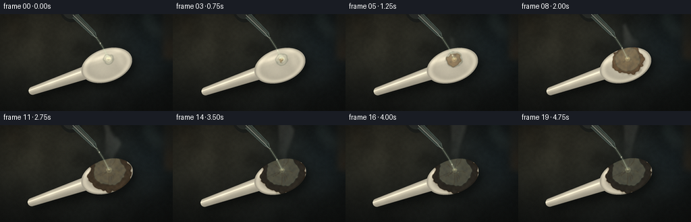
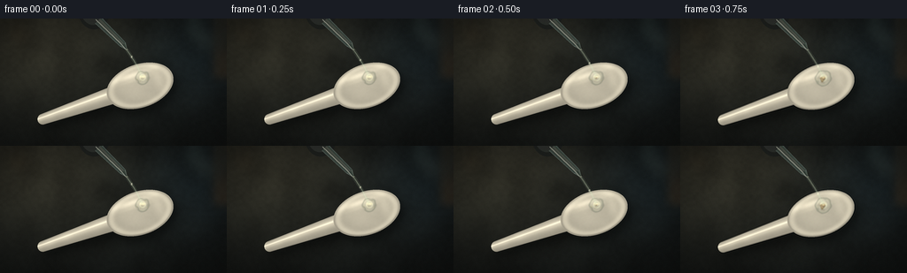
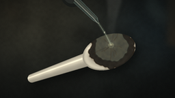
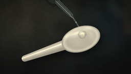

CODING AGENTS AS PIXEL WORLD MODELS
traex/DeepSeek-V4.1-Flash · material_0041
点击播放 · 原生 RGB 像素
逐轮保存的候选
回放视频、检查图与代码变化。
每份候选均可单独播放。实际图片检查记录在下方工具轨迹中。
候选 01播放与检查图
点击播放 · 原生 RGB 像素

展开代码变化
--- 上一保存版本
+++ 本次保存版本
@@ -0,0 +1,615 @@
+#!/usr/bin/env python3
+"""Procedural macro timelapse of sulfuric acid attacking a plastic spoon."""
+
+from __future__ import annotations
+
+import math
+from pathlib import Path
+
+import numpy as np
+from PIL import Image, ImageDraw, ImageFilter
+
+import artifact_io
+
+
+W, H = 256, 144
+N, FPS = 20, 4.0
+S = 4
+RW, RH = W * S, H * S
+
+SPOON_CENTER = (158.0, 76.0)
+SPOON_ANGLE = math.radians(-19.0)
+BOWL_RX, BOWL_RY = 39.0, 24.5
+IMPACT = (161.0, 66.5)
+PIPETTE_TIP = (143.0, 35.0)
+
+
+def smoothstep(edge0: float, edge1: float, x: np.ndarray | float):
+ t = np.clip((x - edge0) / (edge1 - edge0), 0.0, 1.0)
+ return t * t * (3.0 - 2.0 * t)
+
+
+def smooth_noise(seed: int, cells_h: int, cells_w: int) -> np.ndarray:
+ rng = np.random.default_rng(seed)
+ small = rng.random((cells_h, cells_w), dtype=np.float32)
+ image = Image.fromarray((small * 255).astype(np.uint8), "L")
+ image = image.resize((RW, RH), Image.Resampling.BICUBIC)
+ return np.asarray(image, dtype=np.float32) / 255.0
+
+
+def blur_mask(mask: np.ndarray, radius: float) -> np.ndarray:
+ image = Image.fromarray((np.clip(mask, 0, 1) * 255).astype(np.uint8), "L")
+ image = image.filter(ImageFilter.GaussianBlur(radius))
+ return np.asarray(image, dtype=np.float32) / 255.0
+
+
+def over(base: np.ndarray, color: np.ndarray, alpha: np.ndarray) -> np.ndarray:
+ a = np.clip(alpha, 0.0, 1.0)[..., None]
+ return base * (1.0 - a) + color * a
+
+
+Y, X = np.mgrid[0:RH, 0:RW]
+X = X.astype(np.float32)
+Y = Y.astype(np.float32)
+xw = X / S
+yw = Y / S
+
+
+def make_background() -> np.ndarray:
+ u = X / max(RW - 1, 1)
+ v = Y / max(RH - 1, 1)
+ key = np.exp(-(((u - 0.13) / 0.48) ** 2 + ((v - 0.10) / 0.62) ** 2))
+ cool = np.exp(-(((u - 0.89) / 0.26) ** 2 + ((v - 0.24) / 0.42) ** 2))
+ broad = smooth_noise(11, 7, 12)
+ fine = smooth_noise(12, 42, 72)
+ grain = smooth_noise(13, 120, 210)
+
+ base = np.empty((RH, RW, 3), dtype=np.float32)
+ base[..., 0] = 17.0 + 28.0 * key + 3.0 * cool
+ base[..., 1] = 20.0 + 25.0 * key + 8.0 * cool
+ base[..., 2] = 20.0 + 18.0 * key + 12.0 * cool
+ texture = 0.83 + 0.25 * broad + 0.10 * fine + 0.035 * grain
+ base *= texture[..., None]
+
+ # Soft reflections from out-of-focus lab glass.
+ bokeh = Image.new("RGBA", (RW, RH), (0, 0, 0, 0))
+ draw = ImageDraw.Draw(bokeh, "RGBA")
+ draw.ellipse(
+ (int(0.80 * RW), int(-0.02 * RH), int(0.91 * RW), int(0.18 * RH)),
+ fill=(82, 105, 104, 58),
+ )
+ draw.ellipse(
+ (int(0.86 * RW), int(0.08 * RH), int(0.96 * RW), int(0.29 * RH)),
+ fill=(119, 137, 128, 38),
+ )
+ draw.ellipse(
+ (int(0.03 * RW), int(0.02 * RH), int(0.13 * RW), int(0.22 * RH)),
+ fill=(107, 86, 60, 34),
+ )
+ bokeh = bokeh.filter(ImageFilter.GaussianBlur(7.5 * S))
+ bokeh_arr = np.asarray(bokeh, dtype=np.float32)
+ base = over(base, bokeh_arr[..., :3], bokeh_arr[..., 3] / 255.0)
+
+ # A barely visible amber vessel at the right edge establishes the lab setting.
+ vessel = Image.new("RGBA", (RW, RH), (0, 0, 0, 0))
+ vd = ImageDraw.Draw(vessel, "RGBA")
+ vd.rounded_rectangle(
+ (int(0.93 * RW), int(-0.16 * RH), int(1.05 * RW), int(0.49 * RH)),
+ radius=8 * S,
+ fill=(83, 60, 31, 48),
+ outline=(126, 105, 72, 40),
+ width=2 * S,
+ )
+ vd.rectangle(
+ (int(0.94 * RW), int(0.26 * RH), int(1.04 * RW), int(0.48 * RH)),
+ fill=(109, 67, 27, 48),
+ )
+ vessel = vessel.filter(ImageFilter.GaussianBlur(5.0 * S))
+ va = np.asarray(vessel, dtype=np.float32)
+ base = over(base, va[..., :3], va[..., 3] / 255.0)
+
+ # Gentle vignette and a cool edge falloff.
+ rr = np.sqrt(((u - 0.51) / 0.72) ** 2 + ((v - 0.52) / 0.68) ** 2)
+ vignette = np.clip(1.0 - 0.30 * smoothstep(0.42, 1.10, rr), 0.0, 1.0)
+ base *= vignette[..., None]
+ return np.clip(base, 0.0, 255.0)
+
+
+def build_static_scene():
+ background = make_background()
+
+ cos_a, sin_a = math.cos(SPOON_ANGLE), math.sin(SPOON_ANGLE)
+ du = xw - SPOON_CENTER[0]
+ dv = yw - SPOON_CENTER[1]
+ u = cos_a * du + sin_a * dv
+ v = -sin_a * du + cos_a * dv
+
+ bowl_sdf = (u / BOWL_RX) ** 2 + (v / BOWL_RY) ** 2
+ bowl = bowl_sdf <= 1.0
+
+ hu = -u
+ handle_t = np.clip((hu - 20.0) / (116.0 - 20.0), 0.0, 1.0)
+ half_width = 10.5 * (1.0 - handle_t) + 6.1 * handle_t
+ handle = (hu >= 20.0) & (hu <= 116.0) & (np.abs(v) <= half_width)
+ end_cap = ((hu - 116.0) ** 2 + v**2 <= 6.1**2) & (hu > 116.0)
+ handle = handle | end_cap
+ spoon = bowl | handle
+
+ shadow = blur_mask(spoon.astype(np.float32), 5.2 * S)
+ shadow = np.roll(shadow, (7 * S, 4 * S), axis=(0, 1))
+ scene = over(background, np.array([5.0, 7.0, 7.0], np.float32), shadow * 0.58)
+
+ plastic_texture = smooth_noise(21, 85, 145)
+ plastic_texture2 = smooth_noise(22, 17, 29)
+
+ root_bowl = np.sqrt(np.maximum(bowl_sdf, 0.0))
+ inner = np.clip(1.0 - bowl_sdf, 0.0, 1.0)
+ bowl_shade = 0.755 + 0.105 * inner
+ bowl_shade += 0.055 * np.clip(-v / BOWL_RY, 0.0, 1.0)
+ rim = np.exp(-((root_bowl - 0.87) / 0.105) ** 2)
+ bowl_shade += 0.145 * rim
+ rim_spec = np.exp(
+ -(((u / BOWL_RX + 0.12) / 0.57) ** 2 + ((v / BOWL_RY + 0.57) / 0.16) ** 2)
+ )
+ side_spec = np.exp(
+ -(((u / BOWL_RX - 0.58) / 0.15) ** 2 + ((v / BOWL_RY + 0.08) / 0.52) ** 2)
+ )
+ bowl_shade += 0.23 * rim_spec + 0.075 * side_spec
+ bowl_shade -= 0.11 * np.exp(-((root_bowl - 0.975) / 0.035) ** 2) * np.clip(
+ v / BOWL_RY, 0.0, 1.0
+ )
+ bowl_shade *= 0.975 + 0.035 * plastic_texture2 + 0.012 * plastic_texture
+
+ vnorm = v / np.maximum(half_width, 0.1)
+ handle_shade = 0.775 + 0.18 * np.exp(-((vnorm + 0.28) / 0.48) ** 2)
+ handle_shade -= 0.09 * np.clip(vnorm, 0.0, 1.0)
+ handle_spec = np.exp(-((vnorm + 0.34) / 0.12) ** 2)
+ handle_shade += 0.22 * handle_spec
+ handle_shade *= 0.978 + 0.035 * plastic_texture2 + 0.010 * plastic_texture
+
+ ivory = np.array([219.0, 214.0, 197.0], dtype=np.float32)
+ bowl_color = ivory[None, None, :] * bowl_shade[..., None]
+ bowl_color += (
+ np.array([10.0, 9.0, 7.0], dtype=np.float32)[None, None, :]
+ * (0.18 * rim_spec + 0.05 * side_spec)[..., None]
+ )
+ handle_color = ivory[None, None, :] * handle_shade[..., None]
+
+ # Dark bevels and a narrow reflected bench edge keep the plastic from looking flat.
+ bowl_edge = np.exp(-((root_bowl - 0.965) / 0.027) ** 2)
+ handle_edge = np.exp(-((np.abs(v) - half_width) / 0.72) ** 2) * handle
+ bowl_color *= (1.0 - 0.11 * bowl_edge)[..., None]
+ handle_color *= (1.0 - 0.16 * handle_edge)[..., None]
+
+ spoon_color = np.where(bowl[..., None], bowl_color, handle_color)
+ scene = over(scene, spoon_color, spoon.astype(np.float32))
+
+ # Narrow, soft reflected light across the concave bowl.
+ reflection = np.exp(
+ -(((u / BOWL_RX + 0.04) / 0.50) ** 2 + ((v / BOWL_RY + 0.33) / 0.075) ** 2)
+ ) * bowl
+ scene = over(scene, np.array([255.0, 249.0, 225.0], np.float32), reflection * 0.16)
+
+ return scene, bowl, spoon, u, v, bowl_sdf
+
+
+def make_cracks() -> np.ndarray:
+ rng = np.random.default_rng(77)
+ layer = Image.new("L", (RW, RH), 0)
+ draw = ImageDraw.Draw(layer)
+ for _ in range(10):
+ angle = rng.uniform(0.0, 2.0 * math.pi)
+ start = rng.uniform(2.0, 7.0)
+ length = rng.uniform(8.0, 22.0)
+ points = []
+ for j in range(8):
+ q = j / 7.0
+ radius = start + length * q
+ wiggle = math.sin(q * rng.uniform(5.0, 9.0) + angle) * 1.1 * q
+ px = (IMPACT[0] + math.cos(angle) * radius + math.cos(angle + 1.57) * wiggle) * S
+ py = (IMPACT[1] + math.sin(angle) * radius + math.sin(angle + 1.57) * wiggle) * S
+ points.append((px, py))
+ width = max(1, int(round(0.55 * S)))
+ draw.line(points, fill=205, width=width, joint="curve")
+ layer = layer.filter(ImageFilter.GaussianBlur(0.45 * S))
+ return np.asarray(layer, dtype=np.float32) / 255.0
+
+
+def make_bubbles():
+ rng = np.random.default_rng(91)
+ bubbles = []
+ for index in range(22):
+ angle = rng.uniform(0.0, 2.0 * math.pi)
+ distance = rng.uniform(2.0, 14.0)
+ bubbles.append(
+ {
+ "x": IMPACT[0] + math.cos(angle) * distance,
+ "y": IMPACT[1] + math.sin(angle) * distance,
+ "start": int(rng.integers(3, 18)),
+ "life": int(rng.integers(4, 9)),
+ "size": float(rng.uniform(1.25, 3.8)),
+ "phase": float(rng.uniform(0.0, 2.0 * math.pi)),
+ }
+ )
+ return bubbles
+
+
+def draw_capsule(draw, p0, p1, r0, r1, fill):
+ dx, dy = p1[0] - p0[0], p1[1] - p0[1]
+ length = max(math.hypot(dx, dy), 1e-6)
+ nx, ny = -dy / length, dx / length
+ points = [
+ (p0[0] + nx * r0, p0[1] + ny * r0),
+ (p1[0] + nx * r1, p1[1] + ny * r1),
+ (p1[0] - nx * r1, p1[1] - ny * r1),
+ (p0[0] - nx * r0, p0[1] - ny * r0),
+ ]
+ draw.polygon(points, fill=fill)
+
+
+def draw_pipette_and_stream(scene: Image.Image, frame_index: int) -> Image.Image:
+ layer = Image.new("RGBA", (RW, RH), (0, 0, 0, 0))
+ draw = ImageDraw.Draw(layer, "RGBA")
+
+ # Out-of-focus rubber bulb at the upper edge.
+ bulb = (
+ int(88 * S),
+ int(-31 * S),
+ int(124 * S),
+ int(12 * S),
+ )
+ draw.ellipse(bulb, fill=(24, 27, 27, 236))
+ draw.ellipse(
+ (int(91 * S), int(-28 * S), int(119 * S), int(7 * S)),
+ fill=(39, 43, 42, 210),
+ )
+ draw.arc(
+ (int(92 * S), int(-27 * S), int(113 * S), int(6 * S)),
+ 200,
+ 328,
+ fill=(116, 128, 121, 100),
+ width=int(1.1 * S),
+ )
+
+ p0 = (111.0 * S, 2.0 * S)
+ p1 = (138.5 * S, 29.0 * S)
+ p2 = (PIPETTE_TIP[0] * S, PIPETTE_TIP[1] * S)
+ draw_capsule(draw, p0, p1, 5.1 * S, 3.9 * S, (146, 178, 174, 82))
+ draw_capsule(draw, p0, p1, 4.0 * S, 2.9 * S, (83, 119, 116, 76))
+ draw_capsule(draw, p0, p1, 2.5 * S, 1.8 * S, (176, 203, 195, 48))
+ draw_capsule(draw, p1, p2, 3.9 * S, 0.75 * S, (156, 187, 181, 92))
+ draw_capsule(draw, p1, p2, 2.4 * S, 0.45 * S, (83, 116, 110, 68))
+
+ # Glass edge lights and the acid column inside the tube.
+ draw.line(
+ [(108.0 * S, 1.0 * S), (136.0 * S, 28.0 * S), (142.0 * S, 35.0 * S)],
+ fill=(239, 247, 235, 135),
+ width=int(0.85 * S),
+ joint="curve",
+ )
+ draw.line(
+ [(114.0 * S, 2.0 * S), (141.0 * S, 29.0 * S), (143.0 * S, 34.0 * S)],
+ fill=(218, 226, 179, 75),
+ width=int(0.45 * S),
+ joint="curve",
+ )
+ draw.line(
+ [(112.0 * S, 1.0 * S), (139.5 * S, 28.5 * S)],
+ fill=(208, 224, 218, 92),
+ width=int(0.45 * S),
+ )
+
+ # Continuous thin acid stream with a slightly curved fall.
+ stream = []
+ for j in range(19):
+ q = j / 18.0
+ sx = PIPETTE_TIP[0] + 18.0 * q + 1.1 * math.sin(math.pi * q)
+ sy = PIPETTE_TIP[1] + (IMPACT[1] - PIPETTE_TIP[1]) * q
+ stream.append((sx * S, sy * S))
+ draw.line(stream, fill=(198, 222, 196, 25), width=int(4.2 * S), joint="curve")
+ draw.line(stream, fill=(188, 216, 191, 72), width=int(1.45 * S), joint="curve")
+ draw.line(stream, fill=(246, 248, 218, 170), width=max(1, int(0.48 * S)), joint="curve")
+
+ bead_q = 0.18 + 0.66 * ((frame_index * 0.17 + 0.13) % 1.0)
+ bx = PIPETTE_TIP[0] + 18.0 * bead_q + 1.1 * math.sin(math.pi * bead_q)
+ by = PIPETTE_TIP[1] + (IMPACT[1] - PIPETTE_TIP[1]) * bead_q
+ draw.ellipse(
+ (
+ int((bx - 1.0) * S),
+ int((by - 1.4) * S),
+ int((bx + 1.0) * S),
+ int((by + 1.4) * S),
+ ),
+ fill=(249, 250, 226, 155),
+ outline=(178, 206, 180, 92),
+ width=max(1, int(0.25 * S)),
+ )
+ draw.ellipse(
+ (
+ int((PIPETTE_TIP[0] - 1.25) * S),
+ int((PIPETTE_TIP[1] - 1.0) * S),
+ int((PIPETTE_TIP[0] + 1.25) * S),
+ int((PIPETTE_TIP[1] + 1.2) * S),
+ ),
+ fill=(235, 244, 218, 105),
+ outline=(140, 171, 147, 80),
+ width=max(1, int(0.25 * S)),
+ )
+
+ return Image.alpha_composite(scene.convert("RGBA"), layer).convert("RGB")
+
+
+def draw_bubbles_and_cracks(scene: Image.Image, frame_index: int, char_mask: np.ndarray, crack_mask: np.ndarray):
+ layer = Image.new("RGBA", (RW, RH), (0, 0, 0, 0))
+ draw = ImageDraw.Draw(layer, "RGBA")
+ progress = frame_index / (N - 1)
+
+ crack_strength = float(smoothstep(0.24, 0.82, progress))
+ if crack_strength > 0.0:
+ crack_alpha = np.clip(crack_mask * char_mask * crack_strength, 0.0, 1.0)
+ crack_image = Image.fromarray((crack_alpha * 255).astype(np.uint8), "L")
+ dark = Image.new("RGBA", (RW, RH), (21, 17, 13, 0))
+ dark.putalpha(crack_image.point(lambda p: int(p * 0.58)))
+ layer = Image.alpha_composite(layer, dark)
+
+ warm = Image.new("RGBA", (RW, RH), (133, 81, 34, 0))
+ shifted = Image.new("L", (RW, RH), 0)
+ shifted.paste(crack_image, (max(1, int(0.35 * S)), max(1, int(0.35 * S))))
+ warm.putalpha(shifted.point(lambda p: int(p * 0.20)))
+ layer = Image.alpha_composite(layer, warm)
+
+ bubbles = make_bubbles()
+ for bubble in bubbles:
+ age = frame_index - bubble["start"]
+ if age < 0 or age >= bubble["life"]:
+ continue
+ life_q = age / max(bubble["life"] - 1, 1)
+ grow = min(1.0, age / 2.6)
+ radius = bubble["size"] * (0.38 + 0.72 * grow) * (1.0 - 0.18 * life_q)
+ drift = 0.22 * age
+ cx = bubble["x"] + math.cos(bubble["phase"]) * drift
+ cy = bubble["y"] + math.sin(bubble["phase"]) * drift - 0.18 * age
+ fade = min(1.0, age / 1.5) * min(1.0, (bubble["life"] - age) / 1.5)
+ alpha = int(150 * fade)
+ fill = (169, 125, 59, int(45 * fade))
+ outline = (42, 31, 20, alpha)
+ box = (
+ int((cx - radius) * S),
+ int((cy - radius) * S),
+ int((cx + radius) * S),
+ int((cy + radius) * S),
+ )
+ draw.ellipse(box, fill=fill, outline=outline, width=max(1, int(0.34 * S)))
+ hx = cx - radius * 0.35
+ hy = cy - radius * 0.42
+ hr = max(0.55, radius * 0.20)
+ draw.ellipse(
+ (
+ int((hx - hr) * S),
+ int((hy - hr) * S),
+ int((hx + hr) * S),
+ int((hy + hr) * S),
+ ),
+ fill=(249, 238, 190, int(125 * fade)),
+ )
+
+ return Image.alpha_composite(scene.convert("RGBA"), layer).convert("RGB")
+
+
+def render_smoke(frame_index: int, impact_x: float, impact_y: float) -> Image.Image:
+ layer = Image.new("RGBA", (RW, RH), (0, 0, 0, 0))
+ draw = ImageDraw.Draw(layer, "RGBA")
+ progress = frame_index / (N - 1)
+ if progress < 0.10:
+ return layer
+
+ rng = np.random.default_rng(310)
+ for wisp in range(6):
+ start = 2.0 + wisp * 0.9
+ if frame_index < start:
+ continue
+ age = frame_index - start
+ rise = min(76.0, 8.0 + age * 6.2)
+ drift_phase = rng.uniform(0.0, 2.0 * math.pi)
+ base_x = impact_x + (wisp - 2.5) * 1.8
+ for j in range(24):
+ q = j / 23.0
+ y = impact_y - 3.0 - rise * q
+ x = (
+ base_x
+ + 4.2 * q
+ + 2.1 * math.sin(q * 5.5 + drift_phase + frame_index * 0.08)
+ + (wisp - 2.5) * q * 1.7
+ )
+ radius = 0.85 + 3.1 * q
+ alpha = int((9.0 + 25.0 * q) * min(1.0, age / 4.0))
+ tint = (211 + (wisp % 2) * 8, 219, 215 - (wisp % 3) * 4, alpha)
+ draw.ellipse(
+ (
+ int((x - radius) * S),
+ int((y - radius * 1.15) * S),
+ int((x + radius) * S),
+ int((y + radius * 1.15) * S),
+ ),
+ fill=tint,
+ )
+
+ # Low acid mist curls around the impact point.
+ mist = Image.new("RGBA", (RW, RH), (0, 0, 0, 0))
+ md = ImageDraw.Draw(mist, "RGBA")
+ md.ellipse(
+ (
+ int((impact_x - 10) * S),
+ int((impact_y - 8) * S),
+ int((impact_x + 12) * S),
+ int((impact_y + 5) * S),
+ ),
+ fill=(215, 224, 211, 28 if progress < 0.55 else 38),
+ )
+ mist = mist.filter(ImageFilter.GaussianBlur(4.0 * S))
+ layer = Image.alpha_composite(layer, mist)
+ return layer.filter(ImageFilter.GaussianBlur(2.3 * S))
+
+
+def render_frame(
+ frame_index: int,
+ static_scene: np.ndarray,
+ bowl_mask: np.ndarray,
+ noise_mid: np.ndarray,
+ noise_fine: np.ndarray,
+ crack_mask: np.ndarray,
+) -> np.ndarray:
+ progress = frame_index / (N - 1)
+ reaction = float(smoothstep(0.055, 0.65, progress))
+ char_radius = 0.7 + 31.5 * reaction
+ pool_radius = 7.0 + 15.5 * reaction
+ dx = xw - IMPACT[0]
+ dy = yw - IMPACT[1]
+ radius = np.sqrt(dx * dx + dy * dy)
+
+ scene = static_scene.copy()
+
+ # Organic char front: the acid first yellows, then browns and blackens the plastic.
+ edge_noise = (noise_mid - 0.5) * 7.8 + (noise_fine - 0.5) * 3.3
+ char_boundary = char_radius + edge_noise
+ char_mask = (radius <= char_boundary) & bowl_mask & (progress > 0.065)
+ char_inner = np.clip(1.0 - radius / np.maximum(char_boundary, 1.0), 0.0, 1.0)
+ dark = float(smoothstep(0.14, 0.80, progress))
+ texture = np.clip(0.74 + 0.38 * noise_fine + 0.16 * noise_mid, 0.0, 1.25)
+ amber = np.array([91.0, 60.0, 31.0], np.float32)
+ black = np.array([22.0, 20.0, 17.0], np.float32)
+ char_color = amber * (1.0 - dark) + black * dark
+ char_color = char_color[None, None, :] * texture[..., None]
+ char_color += np.array([33.0, 21.0, 9.0], np.float32) * (char_inner * (1.0 - dark))[
+ ..., None
+ ]
+ char_alpha = char_mask.astype(np.float32) * (0.55 + 0.35 * reaction)
+ scene = over(scene, char_color, char_alpha)
+
+ # A dark wet rim makes the carbonized region look like etched plastic.
+ char_rim = np.exp(-((radius - char_boundary) / 1.35) ** 2) * bowl_mask
+ char_rim *= 0.16 + 0.20 * reaction
+ scene = over(scene, np.array([52.0, 37.0, 21.0], np.float32), char_rim)
+
+ # Clear acid pool, slightly refractive and bounded by an irregular wet edge.
+ pool_boundary = pool_radius * (0.86 + 0.26 * noise_mid) + 1.8 * (noise_fine - 0.5)
+ pool_mask = (radius <= pool_boundary) & bowl_mask
+ pool_alpha = pool_mask.astype(np.float32) * (0.15 + 0.10 * reaction)
+ pool_color = np.empty((RH, RW, 3), dtype=np.float32)
+ pool_color[..., 0] = 164.0 + 18.0 * noise_fine
+ pool_color[..., 1] = 177.0 + 15.0 * noise_fine
+ pool_color[..., 2] = 153.0 + 12.0 * noise_mid
+ scene = over(scene, pool_color, pool_alpha)
+
+ wet_rim = np.exp(-((radius - pool_boundary) / 0.95) ** 2) * bowl_mask
+ scene = over(scene, np.array([72.0, 84.0, 74.0], np.float32), wet_rim * 0.26)
+
+ ripple_phase = radius - 1.5 - frame_index * 0.48
+ ripple = np.sin(ripple_phase * 1.45) * np.exp(-radius / 8.5) * pool_mask
+ ripple *= 0.07 + 0.04 * reaction
+ scene += ripple[..., None] * np.array([21.0, 24.0, 18.0], np.float32)
+
+ # Impact glint, caustic ring, and tiny splash beads.
+ impact_glow = np.exp(-((dx / 2.6) ** 2 + ((dy + 0.7) / 1.5) ** 2))
+ scene += impact_glow[..., None] * np.array([77.0, 70.0, 45.0], np.float32)
+ caustic = np.exp(-((radius - 3.1 - 0.35 * math.sin(frame_index * 0.7)) / 0.78) ** 2)
+ caustic *= pool_mask
+ scene += caustic[..., None] * np.array([25.0, 27.0, 18.0], np.float32)
+
+ # A few amber droplets appear at the impact in the first half of the pour.
+ droplets = Image.new("RGBA", (RW, RH), (0, 0, 0, 0))
+ dd = ImageDraw.Draw(droplets, "RGBA")
+ droplet_specs = [
+ (-6.0, 2.5, 0.8),
+ (5.2, 3.3, 0.65),
+ (3.0, -4.3, 0.55),
+ (-2.7, 4.8, 0.45),
+ ]
+ for index, (ox, oy, size) in enumerate(droplet_specs):
+ pulse = 0.72 + 0.28 * math.sin(frame_index * 0.8 + index)
+ r = size * pulse
+ dd.ellipse(
+ (
+ int((IMPACT[0] + ox - r) * S),
+ int((IMPACT[1] + oy - r) * S),
+ int((IMPACT[0] + ox + r) * S),
+ int((IMPACT[1] + oy + r) * S),
+ ),
+ fill=(211, 207, 139, 62),
+ outline=(116, 112, 69, 78),
+ width=max(1, int(0.18 * S)),
+ )
+
+ scene_image = Image.fromarray(np.clip(scene, 0, 255).astype(np.uint8), "RGB")
+ scene_image = Image.alpha_composite(scene_image.convert("RGBA"), droplets).convert("RGB")
+ scene_image = draw_bubbles_and_cracks(scene_image, frame_index, char_mask, crack_mask)
+ scene_image = draw_pipette_and_stream(scene_image, frame_index)
+
+ smoke = render_smoke(frame_index, IMPACT[0], IMPACT[1])
+ scene_image = Image.alpha_composite(scene_image.convert("RGBA"), smoke).convert("RGB")
+
+ out = np.asarray(scene_image, dtype=np.float32)
+
+ # Soft highlight bloom, subtle color grade, and fine film grain.
+ luminance = out.mean(axis=2)
+ highlights = np.clip((luminance - 175.0) / 80.0, 0.0, 1.0)
+ highlight_img = Image.fromarray((highlights * 255).astype(np.uint8), "L")
+ highlight_img = highlight_img.filter(ImageFilter.GaussianBlur(3.2 * S))
+ bloom = np.asarray(highlight_img, dtype=np.float32) / 255.0
+ out += bloom[..., None] * np.array([15.0, 13.0, 9.0], np.float32)
+
+ out[..., 0] = out[..., 0] * 1.015 + 1.5
+ out[..., 1] = out[..., 1] * 1.000 + 1.0
+ out[..., 2] = out[..., 2] * 0.965 + 0.5
+
+ grain_rng = np.random.default_rng(9000 + frame_index)
+ grain = grain_rng.normal(0.0, 1.55, (RH, RW, 1)).astype(np.float32)
+ out += grain
+
+ u = X / max(RW - 1, 1)
+ v = Y / max(RH - 1, 1)
+ rr = np.sqrt(((u - 0.50) / 0.70) ** 2 + ((v - 0.51) / 0.66) ** 2)
+ vignette = np.clip(1.0 - 0.10 * smoothstep(0.45, 1.12, rr), 0.0, 1.0)
+ out *= vignette[..., None]
+ return np.clip(out, 0.0, 255.0).astype(np.uint8)
+
+
+def camera_move(frame: np.ndarray, frame_index: int) -> np.ndarray:
+ image = Image.fromarray(frame, "RGB")
+ zoom = 1.0 + 0.027 * (frame_index / (N - 1))
+ crop_w = int(round(W / zoom))
+ crop_h = int(round(H / zoom))
+ left = (W - crop_w) // 2
+ top = (H - crop_h) // 2
+ image = image.crop((left, top, left + crop_w, top + crop_h))
+ return np.asarray(image.resize((W, H), Image.Resampling.LANCZOS), dtype=np.uint8)
+
+
+def main():
+ case_dir = Path(__file__).resolve().parent
+ static_scene, bowl_mask, spoon_mask, u, v, bowl_sdf = build_static_scene()
+ del spoon_mask, u, v, bowl_sdf
+ noise_mid = smooth_noise(43, 12, 20)
+ noise_fine = smooth_noise(44, 46, 78)
+ crack_mask = make_cracks()
+
+ frames = []
+ for frame_index in range(N):
+ high = render_frame(
+ frame_index,
+ static_scene,
+ bowl_mask,
+ noise_mid,
+ noise_fine,
+ crack_mask,
+ )
+ image = Image.fromarray(high, "RGB").resize((W, H), Image.Resampling.LANCZOS)
+ frames.append(camera_move(np.asarray(image, dtype=np.uint8), frame_index))
+ print(f"rendered frame {frame_index + 1:02d}/{N}")
+
+ artifact_io.save(np.stack(frames, axis=0), case_dir)
+ print(f"wrote {case_dir / 'pixels.npz'}")
+
+
+if __name__ == "__main__":
+ main()
候选 02播放与检查图
点击播放 · 原生 RGB 像素


展开代码变化
--- 上一保存版本
+++ 本次保存版本
@@ -32,13 +32,13 @@
def smooth_noise(seed: int, cells_h: int, cells_w: int) -> np.ndarray:
rng = np.random.default_rng(seed)
small = rng.random((cells_h, cells_w), dtype=np.float32)
- image = Image.fromarray((small * 255).astype(np.uint8), "L")
+ image = Image.fromarray((small * 255).astype(np.uint8))
image = image.resize((RW, RH), Image.Resampling.BICUBIC)
return np.asarray(image, dtype=np.float32) / 255.0
def blur_mask(mask: np.ndarray, radius: float) -> np.ndarray:
- image = Image.fromarray((np.clip(mask, 0, 1) * 255).astype(np.uint8), "L")
+ image = Image.fromarray((np.clip(mask, 0, 1) * 255).astype(np.uint8))
image = image.filter(ImageFilter.GaussianBlur(radius))
return np.asarray(image, dtype=np.float32) / 255.0
@@ -347,7 +347,7 @@
crack_strength = float(smoothstep(0.24, 0.82, progress))
if crack_strength > 0.0:
crack_alpha = np.clip(crack_mask * char_mask * crack_strength, 0.0, 1.0)
- crack_image = Image.fromarray((crack_alpha * 255).astype(np.uint8), "L")
+ crack_image = Image.fromarray((crack_alpha * 255).astype(np.uint8))
dark = Image.new("RGBA", (RW, RH), (21, 17, 13, 0))
dark.putalpha(crack_image.point(lambda p: int(p * 0.58)))
layer = Image.alpha_composite(layer, dark)
@@ -404,26 +404,26 @@
return layer
rng = np.random.default_rng(310)
- for wisp in range(6):
- start = 2.0 + wisp * 0.9
+ for wisp in range(9):
+ start = 2.0 + wisp * 0.62
if frame_index < start:
continue
age = frame_index - start
- rise = min(76.0, 8.0 + age * 6.2)
+ rise = min(66.0, 5.0 + age * 5.0)
drift_phase = rng.uniform(0.0, 2.0 * math.pi)
- base_x = impact_x + (wisp - 2.5) * 1.8
- for j in range(24):
- q = j / 23.0
- y = impact_y - 3.0 - rise * q
+ base_x = impact_x + (wisp - 4.0) * 1.25
+ for j in range(18):
+ q = j / 17.0
+ y = impact_y - 2.0 - rise * q
x = (
base_x
- + 4.2 * q
- + 2.1 * math.sin(q * 5.5 + drift_phase + frame_index * 0.08)
- + (wisp - 2.5) * q * 1.7
+ + 2.4 * q
+ + 1.7 * math.sin(q * 6.0 + drift_phase + frame_index * 0.08)
+ + (wisp - 4.0) * q * 1.2
)
- radius = 0.85 + 3.1 * q
- alpha = int((9.0 + 25.0 * q) * min(1.0, age / 4.0))
- tint = (211 + (wisp % 2) * 8, 219, 215 - (wisp % 3) * 4, alpha)
+ radius = 0.75 + 2.5 * q + 0.35 * math.sin(wisp * 2.1 + j)
+ alpha = int((5.0 + 14.0 * q) * min(1.0, age / 4.0))
+ tint = (212 + (wisp % 2) * 7, 219, 214 - (wisp % 3) * 4, alpha)
draw.ellipse(
(
int((x - radius) * S),
@@ -437,18 +437,22 @@
# Low acid mist curls around the impact point.
mist = Image.new("RGBA", (RW, RH), (0, 0, 0, 0))
md = ImageDraw.Draw(mist, "RGBA")
- md.ellipse(
- (
- int((impact_x - 10) * S),
- int((impact_y - 8) * S),
- int((impact_x + 12) * S),
- int((impact_y + 5) * S),
- ),
- fill=(215, 224, 211, 28 if progress < 0.55 else 38),
- )
- mist = mist.filter(ImageFilter.GaussianBlur(4.0 * S))
+ for index in range(5):
+ ox = (index - 2) * 2.8 + math.sin(frame_index * 0.35 + index) * 1.2
+ oy = -1.0 + (index % 2) * 1.8
+ radius = 4.5 + (index % 3) * 1.4
+ md.ellipse(
+ (
+ int((impact_x + ox - radius) * S),
+ int((impact_y + oy - radius * 0.65) * S),
+ int((impact_x + ox + radius) * S),
+ int((impact_y + oy + radius * 0.65) * S),
+ ),
+ fill=(215, 224, 211, 10 if progress < 0.55 else 15),
+ )
+ mist = mist.filter(ImageFilter.GaussianBlur(5.0 * S))
layer = Image.alpha_composite(layer, mist)
- return layer.filter(ImageFilter.GaussianBlur(2.3 * S))
+ return layer.filter(ImageFilter.GaussianBlur(2.7 * S))
def render_frame(
@@ -470,7 +474,11 @@
scene = static_scene.copy()
# Organic char front: the acid first yellows, then browns and blackens the plastic.
- edge_noise = (noise_mid - 0.5) * 7.8 + (noise_fine - 0.5) * 3.3
+ edge_noise = (
+ (noise_mid - 0.5) * 8.6
+ + (noise_fine - 0.5) * 4.8
+ + 1.6 * np.sin(np.arctan2(dy, dx) * 7.0 + progress * 8.0)
+ )
char_boundary = char_radius + edge_noise
char_mask = (radius <= char_boundary) & bowl_mask & (progress > 0.065)
char_inner = np.clip(1.0 - radius / np.maximum(char_boundary, 1.0), 0.0, 1.0)
@@ -540,7 +548,7 @@
width=max(1, int(0.18 * S)),
)
- scene_image = Image.fromarray(np.clip(scene, 0, 255).astype(np.uint8), "RGB")
+ scene_image = Image.fromarray(np.clip(scene, 0, 255).astype(np.uint8))
scene_image = Image.alpha_composite(scene_image.convert("RGBA"), droplets).convert("RGB")
scene_image = draw_bubbles_and_cracks(scene_image, frame_index, char_mask, crack_mask)
scene_image = draw_pipette_and_stream(scene_image, frame_index)
@@ -553,7 +561,7 @@
# Soft highlight bloom, subtle color grade, and fine film grain.
luminance = out.mean(axis=2)
highlights = np.clip((luminance - 175.0) / 80.0, 0.0, 1.0)
- highlight_img = Image.fromarray((highlights * 255).astype(np.uint8), "L")
+ highlight_img = Image.fromarray((highlights * 255).astype(np.uint8))
highlight_img = highlight_img.filter(ImageFilter.GaussianBlur(3.2 * S))
bloom = np.asarray(highlight_img, dtype=np.float32) / 255.0
out += bloom[..., None] * np.array([15.0, 13.0, 9.0], np.float32)
@@ -575,7 +583,7 @@
def camera_move(frame: np.ndarray, frame_index: int) -> np.ndarray:
- image = Image.fromarray(frame, "RGB")
+ image = Image.fromarray(frame)
zoom = 1.0 + 0.027 * (frame_index / (N - 1))
crop_w = int(round(W / zoom))
crop_h = int(round(H / zoom))
@@ -603,7 +611,7 @@
noise_fine,
crack_mask,
)
- image = Image.fromarray(high, "RGB").resize((W, H), Image.Resampling.LANCZOS)
+ image = Image.fromarray(high).resize((W, H), Image.Resampling.LANCZOS)
frames.append(camera_move(np.asarray(image, dtype=np.uint8), frame_index))
print(f"rendered frame {frame_index + 1:02d}/{N}")
候选 03播放与检查图

可观测工具轨迹
实际执行的命令与返回图片。
命令 1exit 0
/bin/bash -c "pwd && rg --files -g 'prompt.txt' -g 'GENERATION_RULES.md' -g 'task_spec.json' -g '"'!node_modules'"'"
命令 2exit 0
/bin/bash -c 'ls -la'
命令 3exit 0
/bin/bash -c "find . -maxdepth 2 -type f -printf '%p\\n' | sort | head -200"
命令 4exit 0
/bin/bash -c 'cat prompt.txt'
命令 5exit 0
/bin/bash -c 'cat GENERATION_RULES.md'
命令 6exit 0
/bin/bash -c 'cat task_spec.json'
命令 7exit 0
/bin/bash -c "sed -n '1,240p' artifact_io.py"
命令 8exit 0
/bin/bash -c "python - <<'PY'
import sys
import numpy, PIL
print(sys.version.split()[0])
print('numpy', numpy.__version__)
print('Pillow', PIL.__version__)
PY"命令 9exit 0
/bin/bash -c "python - <<'PY'
from PIL import ImageFont
for p in ['/usr/share/fonts/truetype/dejavu/DejaVuSans.ttf','/usr/share/fonts/truetype/liberation2/LiberationSans-Regular.ttf']:
try:
f=ImageFont.truetype(p,10); print('ok',p)
except Exception as e: print('bad',p,e)
PY"命令 10exit 0
/bin/bash -c 'python generate.py'
命令 11exit 0
/bin/bash -c "python - <<'PY'
from PIL import Image
for f in ['frames/00.png','frames/10.png','frames/19.png']:
im=Image.open(f).convert('RGB')
print(f, im.size, im.getextrema())
PY"命令 12exit 0
/bin/bash -c 'python generate.py'
命令 13exit 0
/bin/bash -c "python - <<'PY'
import json, numpy as np
from pathlib import Path
from PIL import Image
spec=json.loads(Path('task_spec.json').read_text())
data=np.load('pixels.npz')['pixels']
print('pixels', data.shape, data.dtype)
frames=np.stack([np.asarray(Image.open(f'frames/{i:02d}.png').convert('RGB')) for i in range(spec['frames'])])
print('frames', frames.shape, frames.dtype, 'range', (int(frames.min()),int(frames.max())))
d=np.abs(frames[1:].astype(np.int16)-frames[:-1].astype(np.int16))
print('consecutive mean delta', round(float(d.mean()),2), 'max', int(d.max()))
print('changed pixels per step', [int((x.max(axis=2)>0).sum()) for x in d])
print('artifacts', [(p, Path(p).exists(), Path(p).stat().st_size if Path(p).exists() else 0) for p in ['pixels.npz','index.html','inspection.png','frames/00.png','frames/19.png']])
PY"视觉工具实际返回图片 1

视觉工具实际返回图片 2

视觉工具实际返回图片 3

视觉工具实际返回图片 4
视觉工具实际返回图片 5

保存候选 3 份；完成命令 13 次；可验证图片返回 5 张。原始 API 响应与完整日志保留在本地。